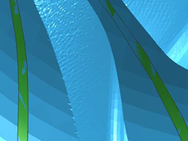

Tool path Verify and Simulate enhancements
What is it?
Enhancements to the tool path Verify and Simulate commands include the following:
-
The Verify command:
-
Depends on the part size instead of the display zoom factor for the animation speed.
-
Has a reduced number of IPW display updates for the maximum Animation Speed setting.
-
-
The Simulate command:
-
Creates an IPW for collision pairs which reference the _WORKPIECE class only when you request the IPW. If you do not request the IPW, NX displays an alert message to warn you that collision pairs referencing the _WORKPIECE class will be ignored because the IPW is off. You must explicitly request the IPW. In NX 8, the IPW was automatically created for any collision pair that referenced the _WORKPIECE class.
-
Supports fully travel to fixed stop motions for touch conditions in CSE machine simulation.
-
-
Material removal is faster. There is up to a 50% improvement for 5-axis machining.
-
IPW quality is improved.

NX 8.5 IPW
NX 8 IPW
-
Shading is improved to provide a smoother surface appearance.
NX 8.5 shading
NX 8 shading
Where do I find it?
Verify and Simulate commands
|
Application |
Manufacturing |
|
Toolbar |
Operations toolbar→Verify Tool Path |
|
Operation Navigator |
Right-click the selected node→Tool Path→Verify or Simulate |
Requesting the IPW
|
Location in dialog box |
Simulation Control Panel dialog box→Simulation Settings group→Show 3D Material Removal check box or Simulation Options dialog box→In Process Workpiece group→In Process Workpiece list→Motion Based or Length Increment option |